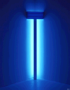
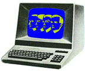
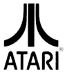
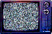

__home __news __what __who __what.was __what.will.be __21/22 corp __(23) __ele_ment __think
|
W H A T . H A S . M A D E . U S |
|
 |
a few concepts to live by minimalism - can be an excuse to say little, but 'less is more' is still the concept of the century. detroit techno - a new, technological music shaped into being in a ruined, but undefeated city. drum'n'bass - pushing beats, and therefore our minds, into unimaginable realms (reinforced has been our literal guide). electro - remembering those abstract electronic beats that made us contort our bodies in the early '80s - kraftwerk provided the template for our lives house - the deep sounds of soulful house music move us, whether they be chicago's sparser, traxier side; disco-based funkifications; or new york's jazzy, sophisticated club house. noise - john cage may not have been our literal guide but we hear the sounds all around us as music...and a layer of sonic grunge can be a marvelous thing. simple living - without realizing there was a movement behind it, most of have been using a lot of those "simple living" techniques for years. it's all about taking what you already have and making the most if it. |
|
O U R . F A V O R I T E . R E C O R D S
| |
 |
a few records to live by computer world - by kraftwerk (1981) frequencies - by LFO (1991) 99% - by meat beat manifesto (1990) minimal nation - by robert hood (1994) parallel universe - by 4 hero (1994) most anything by basic channel most anything by drexciya world to world - by underground resistance (1993?) bytes - by the black dog (1992) selected ambient works vol 1 - by aphex twin (1992) origins - by planetary (dan curtin) (1993) 4 jazz funk classics - by 69 (carl craig) (1992) quadrilocular EP - by morgan geist (1994) (and tons of others) |
|
O U R . F A V O R I T E . T H I N G S
| |
 |
a few things we can't live without atari 2600 - let's admit that those people did some amazing things with almost nothing. vector graphics - wireframe video games still look more advanced. turntables and vinyl - need we say why? still the preferred (and better) medium for DJ interpolations. macintosh - 10% share of the market, and it's still better. amiga - 0% share of the market, and it's still better. 1987, yo! star trek - in a rare bout of brushing with the mainstream, some of us must admit to being semi-trekkies (is worf going to beat us up now?). |
|
O U R . L E A S T . F A V O R I T E . T H I N G S
| |
 |
a few things we can live without TV - for some reason, only 1/2 of us even own one, and the 1/2 that do, don't watch it. i guess we're not missing too much. does this mean we're free to think for ourselves? happy hardcore - it sure is fun to wish this music would disappear, but it insists on existing. like a virus. slow breaks - okay, okay...it's a cheap shot, but most of us just can't get with music that is so blatant. or inherently dated. it was great in '91, but we ain't dwelling on it... money - yah we is busted broke, for the most part. so what? our economy is too profit-driven anyway. "ecologically-sustainable stability" should be the catchword. and we still have our integrity, right? right?!?! ("less is more...less is more...less is more...") |
|
__what-index
__what we are
__what has made us
__what is here
|